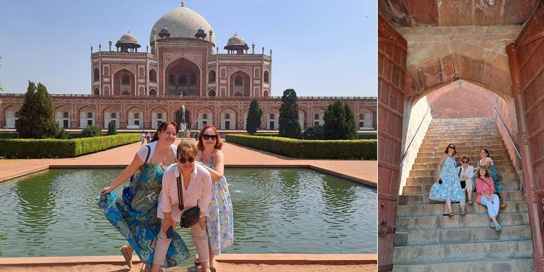

Drugi dan, Nju Delhi: Sandokan, berberin i lotos
Prvi indijski doručak, u hotelu, i ljubav na prvi zalogaj. Raskošni ukusi. Odgovarajući je bio i neonski natpis: Love at first bite u fensi kuhinji sa švedskim stolom.
Obilazak znamenitosti. Prvo smo bile na Gandijevom ne znam čemu. Nije grobnica mada tako izgleda. Gandi je kremiran i bačen u svetu reku Gang, a ovde je to nešto od mermera sa vencima i večitim plamenom (gori od kad je Gandi umro). U blizini je i jedno drvo (na tom delu nema drugog drveća) koje je Tito posadio.
Naišli smo na kongres žena isto obučenih u identične elegantne sarije i mi smo njima bili interesantni, i one su nas pitale da se slikamo. Sve su sićušne kao i većina Indusa i osećala sam se kao Guliver u zemlji Liliputanaca. Imam lepu sliku sa njima.
A srele smo i jednog baš lepog Indusa, kao Sandokan, tamnoput sa zelenim očima, još i visok. Sa turbanom na glavi i u beloj košulji. Dušu dao za slikanje. Kada smo pitale da se slikamo, rekao je nema problema, samo prvo da usuče brkove. Duge brkove je uvijao na krajevima na gore u krug, prstima, i kad su bili besprekorni bio je spreman za slikanje.
Zatim Indija gejt, meni liči na Trijumfalnu kapiju u Parizu. Posvećena je palim borcima u raznim ratovima. Tu imamo sliku kako smo skočili, nas dosta iz grupe. To mi je jedna od omiljenih slika. Kako je lepo biti u društvu mladih.
Sreli smo i učenike koji su došli da je posete. Mnogo su bili slatki i druželjubivi, sa onim lepim, sjajnim, crnim očima i kosama. Mahali su nam i slikali nas i snimali. Bili su u uniformama. Sad imam uslikane i indijske, japanske, tajlandske i maldivske đačiće u uniformama.
Obišli smo i Humajunovu grobnicu, mauzolej koju je žena digla preminulom mužu (za razliku od Tadža gde je muž ženi), koja je bila uzor Tadž Mahalu. Sličnog je oblika ali je crvena. Kuriozitet je da je pored glavnog još jedan mauzolej sa grobnicom za vladarovog berberina jer su očigledno brada i brkovi od izuzetne važnosti ovde.
Posetili smo i hram Lotos, u obliku lotosovog cveta. Finansirali ga Amerikanci, Kanađani i Australijanci (mene čak podseća na sidnejsku Operu). Predviđeno je da tu mogu da dođu sve vere da se mole. Indijci ga baš nešto ne vole. Spolja je prekrasan, beo, kao cvet, okolo besprekorna travica, cveće, palme. Svuda im je sve sređeno i maksimalno uredno oko znamenitosti.

Nikola nas je vodio u restoran na ručak. Maja, protivnica agencija i vođenja, protestovala jer bi ona možda odabrala i drugi restoran, lepši, međutim kada smo došli, restoran je bio baš lep, a hrana ekstra, čak je i Maja priznala.
Za kraj obilazak jednog hrama koji je sav nacifran figurama, oblicima, u bojama, belo, oker, braon, nestvarno lep i neobičan. Ali ono što mi se nikako nije dopalo u Indiji: hramovi ne mogu da se slikaju ni unutra ni spolja. Tek iza ograde pa kako i koliko se vidi. Ostaše mi slike zarobljene u glavi. Unutra nam je Nikola pričao o njihovim bogovima.

Tri glavna boga u hinduizmu čine Trimurti, što znači „trojstvo“ ili „tri oblika“. Oni predstavljaju tri osnovne sile u univerzumu:
- Brahma – Stvoritelj
- Zadužen za stvaranje sveta i svega što postoji.
- Obično se prikazuje sa četiri lica i sedi na lotosovom cvetu.
- Njegova supruga je Sarasvati, boginja mudrosti i umetnosti.
- Višnu – Održavalac
- Održava red i ravnotežu u svetu.
- Ima mnoge inkarnacije (avatari), najpoznatiji su Rama i Krišna.
- Njegova supruga je Lakšmi, boginja bogatstva i sreće.
- Šiva – Uništitelj i preobražavalac
- Uništava da bi omogućio novo stvaranje; simbol promene i duhovnog oslobođenja.
- Često prikazan u meditaciji ili kao Nataradža, gospodar plesa.
- Njegova supruga je Parvati, a sinovi su Ganeša i Kartikeya.
Zajedno predstavljaju ciklus života: stvaranje (Brahma), održavanje (Višnu) i uništenje/rastvaranje (Šiva).
Jedan od njih, Šiva, je bio sa boginjom Parvati pa je ostavio. U neko doba, posle n godina, ona se odmarala i rekla sinu da je niko ne uznemirava, a Šiva je se odnekuda setio i rešio da je obiđe. Sin ga zaustavi, ne možeš kod mame. Šiva mu odseče glavu. Mama kuku, Šivo, to ti je bio sin. Šiva naredi stražarima da nađu glavu, glave nigde i on šta će, odseče slonu glavu i stavi na sina. Tako je nastao Ganeša, božanstvo sa slonovskom glavom čija figura se kupuje za sreću za sve nove stvari: kuću, posao, dete. Hanuman, ima majmunsku glavu. Pitala sam Nikolu da li je i njemu tata odsekao glavu. Rekao je da misli da nije. Rodio se sa takvom majmunskom glavom? E, sad je i Nikola bio zbunjen. Ako sam dobro razumela, i Buda i Hare Krišna su inkarnacije (avatari) ovih glavnih božanstava. Toliko ih ima i tako se pretvaraju iz jednog u drugog da mi sve liči na Petrovo objašnjavanje video igrica sa sve moćima koje ko ima i tim pretvaranjima, kao da su video igrice imale inspiraciju u indijskim božanstvima. I tako, interesantnih priča ima ali slika ne, slika nema, na moju žalost.
Tu noć putujemo autobusom u Puškar. Imala sam dva sedišta u autobusu i srećom uspela da odspavam, spremna za Puškar.